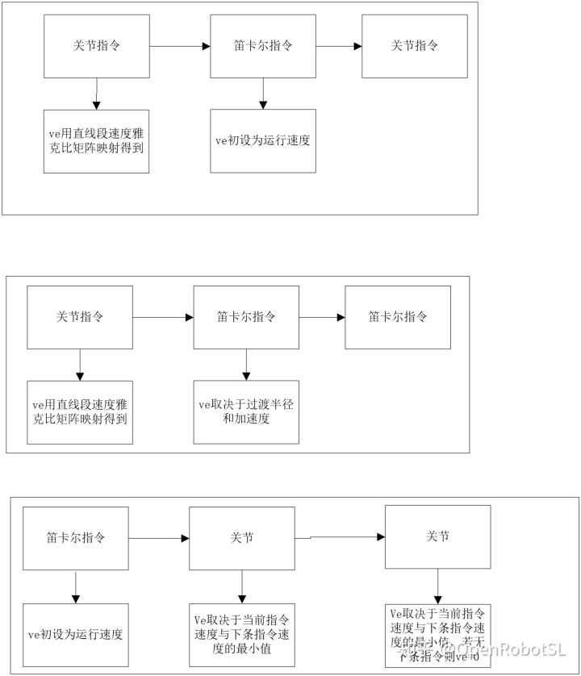

Home 连续微小线段速度前瞻规划算法 关节和笛卡尔空间机械臂连续运动末速度如何设定
本文转载自： https://zhuanlan.zhihu.com/p/359428731
2021-4-11更新 整活儿两只老虎，前排感谢聚变大佬提供指导
https://www.zhihu.com/zvideo/13646751585071923202021-4-9 更新空间多姿态规划
这段时间首先感谢韩冰老师帮忙，还有灵思李工帮忙，少踩了不少坑。传统姿态规划大部分是slerp squad ，存在不少问题，现在用高阶多项式进行任意多姿态连续规划，后期可以加上速度等约束。
https://www.zhihu.com/zvideo/13639169154930892802021-4-2 更新连续路径轨迹规划视频，
下方为实时线速度，要实时考虑路径，这种前瞻轨迹对精度控制比较高
https://www.zhihu.com/zvideo/13613342026722385932021-3-31 更新末端跟踪人手书写轨迹视频
视频中简单做了一个人手在平板写字，并且采样传送给机器人末端进行轨迹规划。仿真虽然看起来平滑，实际人手和机器人应该都要处于中低速状态。
https://www.zhihu.com/zvideo/1360737460721385472正文
仅供娱乐，部分属于论文内容不方便透露细节，但是也是基于传统算法改进的。
轨迹规划往往是需要结合一定条件的，要不然直接离线规划算了，比如最常见的避障啥的，这篇文章就不多少了，避障等是比较简单的，就是碰撞检测逻辑写的好一点就可以了。剩下交给规划来处理。（避障部分属于论文内容，毕业后在写一写，最近几个月被大论文按在地上摩擦。。。。），还有问到姿态问题，这部分好多博主写的比较详细了，就不重复了，我基本测试都是没问题的，和位置原理相似。
从工程角度来讲轨迹规划需要一定的算法逻辑思路，最常见的就是报错机制，一段算法可能比较简单，但是如何处理错误，如何判断工况，场景这些才是最复杂的，往往需要比较好的逻辑流程图来辅助实现算法，当然编程来实现逻辑也是比较重要的。
从学术角度来讲，往大了了说优化，学习，炼丹炉，往小了说结合各种约束条件if else调用不同公式处理，都是比较要求数学功底的，希望从事这方面科研的的小伙伴认真学习数学。
1.最简单也是最通用的无非就是关节空间同步运动，大部分是先基于速度规划计算出每个轴的规划时间Ti，然后寻找最大时间Tmax，之后其他各轴基于最大时间做同步。属于比较传统的同步算法，如果规划失败如何处理，还有很多其他问题，目前就是解决这些问题。最简单的方法就是如果失败，就自动找一个可达位置继续进行规划，只要保证终点可达就行。
2.如何处理运动过程中的平滑性问题，传统方案从加速度，甚至加加速度入手（比如下面4），但是不考虑动力学特性往往是不够的，比较一般的方法是结合力矩约束来实现。
3.空间任意曲线速度规划，涉及到大部分都是数控上的曲线拟合插值技术，很多论文都有介绍，缺点就是存在误差，数控上通过精密微小的插补周期来实现误差控制。
4. 考虑到运动特性，从加加速度规划出发也能获得较好的运动特性
5.多种考虑因素，那么就包括很多项了，也可根据要求，目标直接考虑最底层或者需求那项，这部分没有研究过。。。
6 . 以上方法都是基于方程或者解析表达式的方法，下面6，7这种是完全方程未知，通过原始离散数据进行拟合，然后重新进行速度规划。并且可以实现多轴数据同步，借鉴了一种解耦思想，每个轴独立规划，实现同步。
7.笛卡尔空间数据拟合，类似上面
8. 空间曲线过渡（位置，姿态四元数等），包括但是不限于多空间转换，自适应半径过渡，多轨迹拼接等。最简单的方法就是之前写过的slerp，圆弧过渡，直线+圆弧+直线基本能胜任90%的任务加工需求。当做比较高端的轨迹路径时候，就要考虑用高阶多项式（所有曲线都是多项式构成）方法。当然也要考虑速度规划，仿真只是简单测试了下整条曲线进行S速度，可以看到非常平滑，实际情况应该根据具体转弯半径来设置速度或者恒速或者变速。
9-1.混合空间过渡，图可能不太清晰，用的是旧版的程序跑的。。。红色轨迹是关节空间映射到笛卡尔曲线，蓝色是过渡，橘色是笛卡尔直线。完成了关节-笛卡尔空间位置（姿态），速度，加速度连续过渡（附带约束）。
9-2.关节空间自适应过渡，如果直接用关节空间拼接可能存在约束问题，比如急转，大部分情况降低速度处理，这样效率很难提高，这时候就需要采用算法产生自适应过渡区间。关节从A-P-B点，P点如果很奇葩，那么就要采取策略了。蓝色区域为设置的关节过渡区间。
10. 补一个姿态，这个就是四元数显示和旋转矩阵显示，slerp,squad,高阶多项式等方法比较成熟了。
最后补一点实际加工样图，因为有很多加工需求不一样，有的要求过渡，有的要求点可达，下面就是两种情况，一种过渡点实现，一种严格按照点走。
本文转载自： https://zhuanlan.zhihu.com/p/359346792
连续微小线段速度前瞻规划算法
研究现状
速度前瞻规划是指预先分析后续路径，获取路径长度和速度约束条件等信息，并根据这些信息进行自适应速度调整，从而尽可能地提高加工速度。速度前瞻规划可以有效地缩短加工时间，减小机床振动，保护刀具以及提高加工质量，是保证速度平稳性和提高加工效率的重要途径，也是机床实现高速高平稳加工的一个不可或缺的过程。速度前瞻规划是高速高平稳数控系统必不可少的算法，部分国外、国内数控系统应用速度前瞻的情况分别如下表所示。
复杂型面的数控加工普遍采用ＣＡＭ编程，这时型面通常会被逼近成大量小线段。采用常规的加工技术时，需要在每个小线段内升降速，使机床频繁起停，加工效率低下。研究高速高平稳加工技术是在保证平稳性的前提下实现复杂轨迹的高速加工，是高性能数控系统中必须考虑的实际问题。实现高速平稳加工首先需要对原先的连续小线段进行处理，对原先的连续小线段进行优化，这种过程本文称为路径规划。
路径规划的目的是在轨迹误差允许的范围内，重新进行刀路路径的规划，生成新的刀路路径。新刀路路径会在原始刀路路径的基础上，改善原有路径的几何连续性。经过刀路路径规划，机床的整体加工速度和加工平稳性会得到提高。
解决复杂轨迹高速平稳加工的路径规划途径主要有两个：一是未进行全局曲线拟合的路径规划；二是进行全局曲线拟合的路径规划。
局部路径规划
目前，未进行全局曲线拟合路径规划的研究主要集中于转折点过渡方面。转折点过渡有两种思路，一是直接过渡，二是转接过渡。在进行过渡时不仅要考虑过渡的形式，还要考虑过渡对精度、效率以及平稳性等方面的影响，建立过渡时的精度、速度以及平稳性等方面的约束摸型。
（１）直接过渡
直接过渡不对原来的路径做任何优化，保持原有的连续短线段不变。
直接过渡的优点是计算复杂度低，处理简单，方便集成于数控系统中，在低端数控系统中应用较为广泛。直接过渡的最大缺点是高速时速度波动大，平稳性差。直接过渡法保证了转折点合成速度的大小不发生变化，但是由于合成速度是个矢量，当速度方向发生变化时，会造成各运动轴的速度波动。
对于直接过渡，可以通过限制转折点加速度大小的方式来减小速度波动，但是相应地速度会很低，又造成电机频繁起停的问题。采用直接过渡难以满足数控系统的高速平稳性能要求。
（２）转接过渡
直接过渡在转折点的平稳性较差的根本原因是转折点处的速度方向的变化过大，可以通过插入曲线减小速度方向变化的程度，从而实现速度的平滑过渡，这就是转接过渡。转接过渡在转折点处插入了新的曲线，改善了原有路径的几何连续性。
转接过渡的优点是可以改善转折点处的冲击，实现速度的平滑过渡。对于Bezier曲线、PH曲线、Ｂ样条曲线以及Ferguson曲线等样条曲线过渡方式，如下图所示，可以实现理论上的曲率连续从而保证加速度连续，不存在理论上的速度波动。转接过渡的缺点是相比于直接过渡，牺牲了一定精度，插补计算过程也更为复杂。特别是Bezier曲线等样条曲线在实际加工时的前瞻插补过程中，误差、效率以及平稳性方面很难保证，同时会存在计算量过大，实时性难以保证的情况，在工程实用方面有很多困难。目前样条曲线过渡一般见于Simens、Heidenhain等国外数控系统，出于商业利益的原因，细节并未公布。国内在样条曲线过渡方面也有诸多研究，但是真正成型进行商业应用的更多的还是小线段过渡以及圆弧过渡。
全局路径规划
目前，利用离散后的轨迹点信息，在一定轨迹误差范围内用特定的曲线对离散后的连续线段进行曲线拟合，达到光顺路径的目的，进而利用曲线直接进行曲线插补是当前数控运动控制算法研究的热点。曲线拟合的方式主要为逼近和插值，如下图所示
运用全局曲线拟合后参数插补的优点是可以获得高阶连续的路径，从而实现速度平滑过渡，提高加工时的高速平稳性能。缺点是在进行全局曲线拟合后的曲线前瞻插补时，需要考虑精度、加减速规律、曲线缓变等诸多复杂的约束情况，增加了处理的复杂性，难以满足实时性要求。这种方法的主要难点不在于曲线拟合，而在于拟合后的速度前瞻及插补过程。
综合来看，全局曲线拟合路径规划方案的基本思路是预设一个逼近误差，运用高阶曲线（曲率连续），在逼近误差允许的范围内进行全局曲线拟合。而弓高误差、速度限制、加速度限制等许多复杂的约束和难点则留给曲线前瞻及插补过程，对硬件的实时性提出了很高要求。目前这种方案国内大多处于理论研究和实验阶段，离实际的工程应用还有很大距离。目前实际工程应用较多的还是未进行全局曲线拟合的路径规划方案。
运动控制算法框架
算法框架如下图所示。
一个具有实时性的运动控制算法框架我认为至少包含一个周期中断，用于实时插补。另外速度前瞻和速度规划可以作为一个任务。如果没有使用RTOS，只需要一个周期中断就可以了，速度前瞻和速度规划在主循环中顺序执行即可。
如果使用RTOS多任务，这里值得注意的是要设计好轨迹缓存循环队列的数据结构，设计好互斥量，实现对共享数据的同步和保护。
在嵌入式环境测试调试算法将会比较麻烦，主要是对输出数据的采集和可视化分析不方便。因此建议在PC机上使用多线程和定时器，模拟嵌入式环境的多任务和中断，进行算法框架的测试。
没有代码，这里只是简单解释讨论机器人，数控技术中复杂轨迹如果实现。
方案1：通过高次多项式，样条等曲线拟合路径点，通过不同误差定义方式，控制两点选择，然后每两个点之间近似认为是微小线段，添加过渡程序（图3就是两条直线过渡，圆弧，样条等）。
方案2：直接在拟合曲线的时候添加速度速度规划，来拟合曲线的系数。
欢迎大家讨论，这属于工程问题哈~~~~~

======================================================================
我的测试结果及程序
下面是我测试的代码：